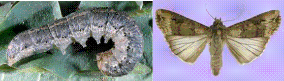
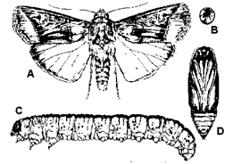

| Home |
| PEST OF CHILLIES |
MAJOR PESTS |
| 1. Chillies thrips |
| 2. Muranai mite/ Broad mite/ yellow mite |
| 3. Tobacco caterpillar |
| 4. Fruit borer |
MINOR PESTS |
| 1. Stem borer |
| 2. Cut worm |
| 3. Green peach aphid |
| Questions |
| Download Notes |
CHILLIES :: MINOR PEST :: CUT WORM
2. Cut worm: Agrotis ipsilon (Noctuidae: Lepidoptera)
|  |
The greasy cut worms come out during night and cut the seedlings at ground level and eat tender leaves. Larva: Black with pale mid dorsal stripes; head pale brown, skin with coarse granules interspersed with small granules. Adult: Forewing pale brown with dark purplish brown along costal and towards base; hind wing white with brown tinge.
ETL: 2 larvae/ metre row
|  |
A- Adult, B- Egg, C- Larva, D- Pupa
Managemnet
- Hand pick and destroy the larvae – morning and evening hours on cracks and crevices in the field
- Plough the soil during summer months to expose larvae and pupae for predation by birds.
- Operate light trap @ 12 traps/ ha
- Place pheromone traps @ 12 traps/ ha to attract male moths
- Poison bait: Rice bran 12.5 Kg +Molasses or Brown sugar 2.5Kg + Carbaryl 50 WP 1.25 Kg – Mix the ingredients well – Keep around the field in the evening hours
- Irrigate in day time to expose larvae for avian predators
- Insecticides: Endosulfan 35EC @ 1 L/ha or chlorpyriphos 20EC @ 1 L/ha or neem oil @ 3%